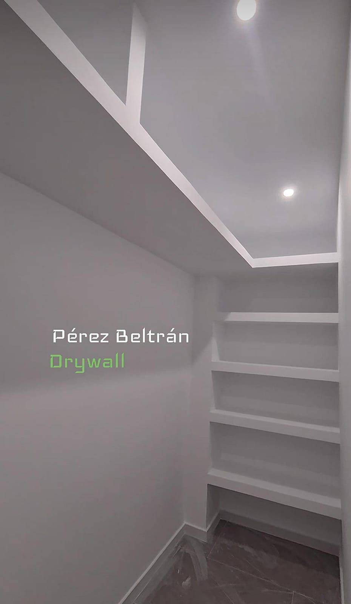
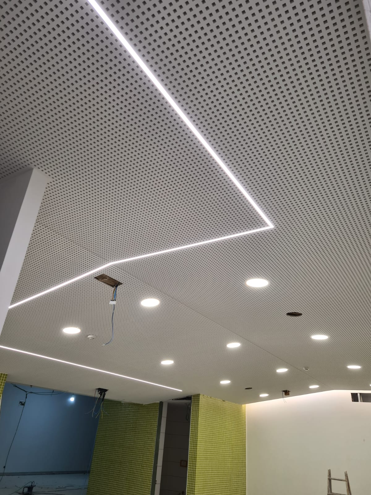

Pladur a medida
para espacios que impresionan
Techos, tabiques, trasdosados y acabados decorativos en pladur, ejecutados con precisión artesanal. Pide presupuesto hoy mismo, sin compromiso.
Todo lo que necesita tu proyecto en pladur
Desde una reforma de vivienda hasta un local comercial completo. Diseñamos y ejecutamos cada detalle.
{{ s.title }}
{{ s.desc }}
De la idea al acabado final
Un proceso claro, sin sorpresas, pensado para que sepas en todo momento en qué punto está tu proyecto.
{{ step.title }}
{{ step.desc }}
Proyectos que hablan por nosotros

Especialistas en pladur, con oficio y detalle
En Pérez Beltrán Interiores trabajamos el pladur como un oficio de precisión: techos continuos, bóvedas, tabiques, trasdosados y mobiliario integrado, tanto para particulares como para empresas y constructoras.
Cuidamos cada detalle: desde la primera medición hasta el último remate, con materiales de calidad y un acabado que se nota.
Movilidad real, en toda España
No nos limitamos a una zona. Estudiamos cada proyecto según su ubicación y alcance, y nos organizamos para ejecutarlo con la misma exigencia estés donde estés.
Resolvemos tus dudas
{{ faq.a }}

¿Tienes un proyecto en mente?
Cuéntanos qué necesitas y te preparamos un presupuesto sin compromiso. Respuesta rápida por WhatsApp.